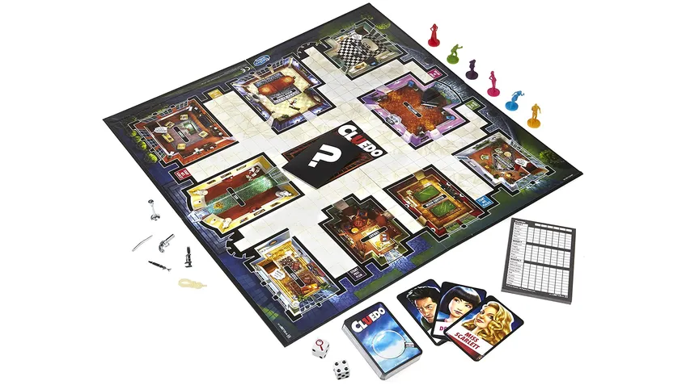

layout: true background-image: url(ozadje.jpeg) --- class: center, middle # Cluedo --- # Pravila V kolikor ne pozante pravil igre Cluedo, si jih za lažje razumevanje preberite. Pravila v angleškem jeziku so dostopna [tukaj](https://www.hasbro.com/common/documents/dad2885d1c4311ddbd0b0800200c9a66/2BFAEC9E5056900B102C3859E9AC6332.pdf).  <!-- nov slide z obstoječo vsebino --> --- ##Kakšne so možnosti? Vprašanje ki si ga bomo zastavili je: **Kakšne so možnosti, da v prvem poskusu zmagamo igro?** To bi pomenilo, da v potezi s katero pridemo v prvo sobo pravilno uganemo kdo je moril, s čim in kje. --- ###Na kartah imamo - šest osumljencev, - šest orožij in - devet lokacij. Vendar pa to še ni konec zgodbe, saj tudi v rokah držimo nekaj kart. S tem si povečamo možnost za pravilni odgovor. Število kart, ki jih imamo v roki je odvisna od števila igralcev. Igro lahko igra od tri do šest igralcev. --- ### Kdo? S čim? Kje? Kot smo povedali že prej, je v igri $6+6+9=21$ kart. Ko izberemo predstavnika iz vsake kategorije, ki postanejo rešitev igre, nam jih ostane še $5+5+8=18$. Glede na število igralcev v roke dobimo od tri do šest kart. --- ### Trije igralci V kolikor igro igrajo le trije igralci, ima vsak v roki šest kart. Možnosti za pravilni ugib so zdaj odvisne še od vrste kart v tvoji roki. Za začetek si poglejmo dva primera: - Z dvema kartama vsake kategorije, imaš $\frac{1}{4} \cdot \frac{1}{4} \cdot \frac{1}{7} = \frac{1}{112}$ možnosti, da naključno, uspešno uganeš rešitev. To je približno $0.89\% $. - Če v roko ne dobiš nobenega osumljenca, eno orožje in pet lokacij, imaš $\frac{1}{6} \cdot \frac{1}{5} \cdot \frac{1}{4} = \frac{1}{120}$ možnosti. To je približno $0.83\% $. --- ### Tabela vseh možnih kombinacij: <table style="line-height: 0.8;"> <thead> <tr> <th style="width: 130px; text-align: left;">Osumljenci</th> <th style="width: 80px; text-align: left;">Orožja</th> <th style="width: 60px; text-align: left;">Sobe</th> <th style="width: 100px; text-align: right;">Verjetnost</th> </tr> </thead> <tbody> <tr> <td>0</td> <td>0</td> <td>6</td> <td>0.926%</td> </tr> <tr> <td>0</td> <td>1</td> <td>5</td> <td>0.833%</td> </tr> <tr> <td>0</td> <td>2</td> <td>4</td> <td>0.833%</td> </tr> <tr> <td>0</td> <td>3</td> <td>3</td> <td>0.926%</td> </tr> <tr> <td>0</td> <td>4</td> <td>2</td> <td>1.190%</td> </tr> <tr> <td>0</td> <td>5</td> <td>1</td> <td>2.083%</td> </tr> <tr> <td>1</td> <td>0</td> <td>5</td> <td>0.833%</td> </tr> <tr> <td>1</td> <td>1</td> <td>4</td> <td>0.800%</td> </tr> <tr> <td>1</td> <td>2</td> <td>3</td> <td>0.833%</td> </tr> <tr> <td>1</td> <td>3</td> <td>2</td> <td>0.952%</td> </tr> <tr> <td>1</td> <td>4</td> <td>1</td> <td>1.250%</td> </tr> <tr> <td>1</td> <td>5</td> <td>0</td> <td><mark>2.222%</mark></td> </tr> <tr> <td>2</td> <td>0</td> <td>4</td> <td>0.833%</td> </tr> <tr> <td>2</td> <td>1</td> <td>3</td> <td>0.833%</td> </tr> <tr> <td>2</td> <td>2</td> <td>2</td> <td>0.893%</td> </tr> <tr> <td>2</td> <td>3</td> <td>1</td> <td>1.042%</td> </tr> <tr> <td>2</td> <td>4</td> <td>0</td> <td>1.389%</td> </tr> <tr> <td>3</td> <td>0</td> <td>3</td> <td>0.926%</td> </tr> <tr> <td>3</td> <td>1</td> <td>2</td> <td>0.952%</td> </tr> <tr> <td>3</td> <td>2</td> <td>1</td> <td>1.042%</td> </tr> <tr> <td>3</td> <td>3</td> <td>0</td> <td>1.235%</td> </tr> <tr> <td>4</td> <td>0</td> <td>2</td> <td>1.190%</td> </tr> <tr> <td>4</td> <td>1</td> <td>1</td> <td>1.250%</td> </tr> <tr> <td>4</td> <td>2</td> <td>0</td> <td>1.389%</td> </tr> <tr> <td>5</td> <td>0</td> <td>1</td> <td>2.083%</td> </tr> <tr> <td>5</td> <td>1</td> <td>0</td> <td><mark>2.222%</mark></td> </tr> </tbody> </table> --- ### Odgovor Kot lahko vidimo, imamo simetrijo pri osumljencih in orožjih. *(Kar je očitno, saj je število obeh enako.)* Najboljšo možnost za zmago imamo torej, kadar v roke dobimo vseh pet kart ene izmed teh skupin in hkrati šesta karta ni soba. Takrat je naša možnosti, da v prvem poskusu naključno uganemo pravilno rešitev kar $ 2.22\% $. Kadar igra več igralcev, v roke dobimo manj kart. Takrat imamo največjo verjetnost za zmago kadar so bodisi vse naše karte orožja, bodisi vse osumljenci. Verjetnosti so: - $\frac{1}{54}$ pri petih, - $\frac{1}{108}$ pri štirih in - $\frac{1}{162}$ pri treh kartah. --- ### Viri - [vsebina](https://datagenetics.com/blog/january42021/index.html) - [ozadje](https://images.pexels.com/photos/235985/pexels-photo-235985.jpeg) - [slika Cluedo](https://lh5.googleusercontent.com/-1bRCQYzCEBLvsXVmP3o9qLqfMelvk9dQFYy9-WdvXCLrPGFQdhZ3_oy_PPsli6coB2qnMzmW66SltApdNfsQ0DETsLfnOKTr2jS0dRiyyS7zLX9kK2yZ60bqoGUTQVGGyu-l4RvA5mffpQWGfknnC_4qYxdmmPmVXDGP2zqRkKjLaoALrHH-mYMNg)